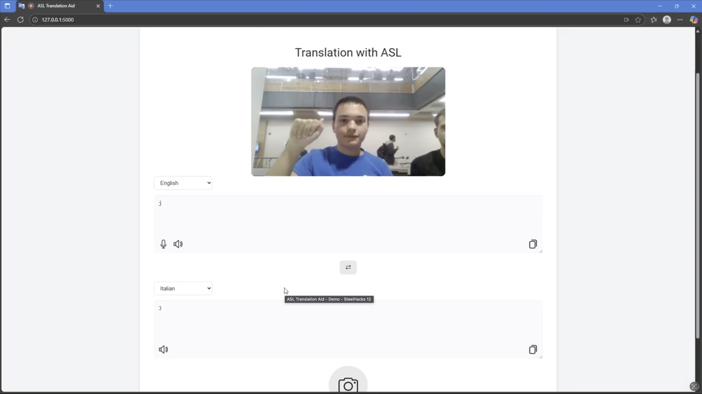
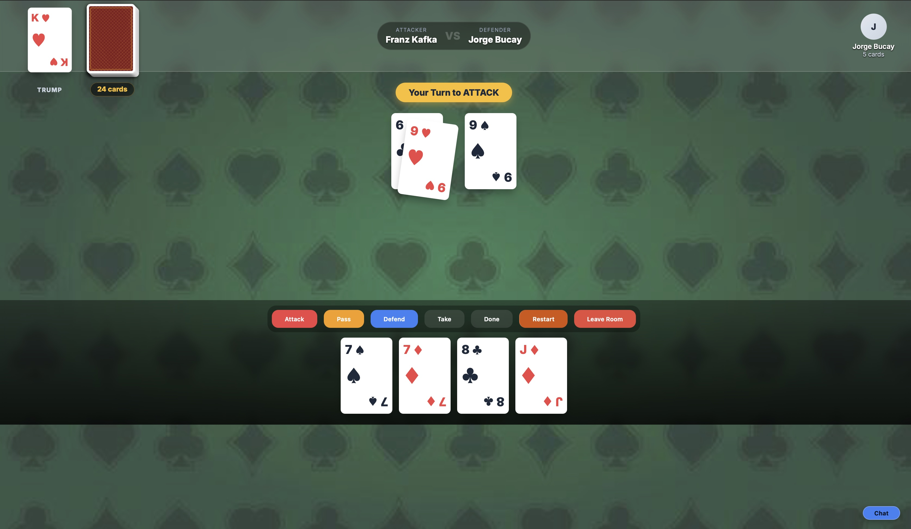
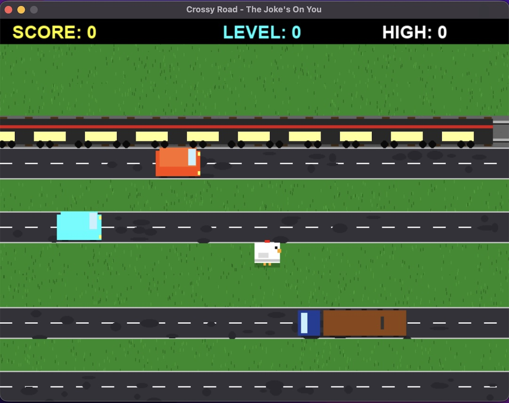
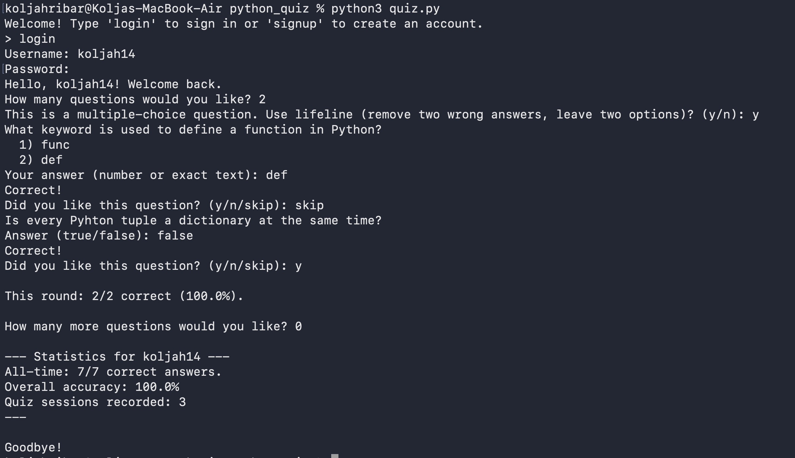
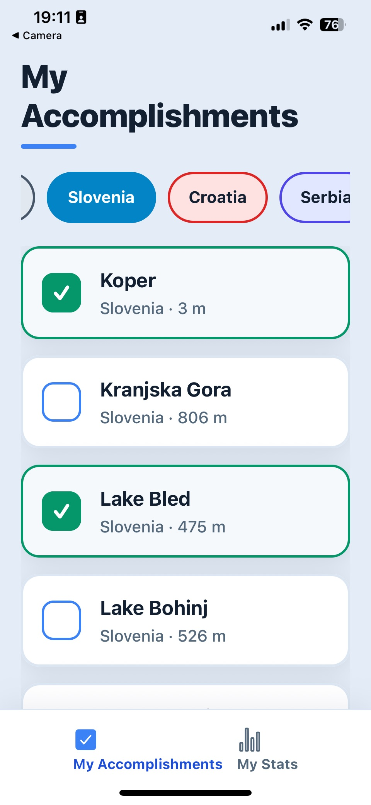
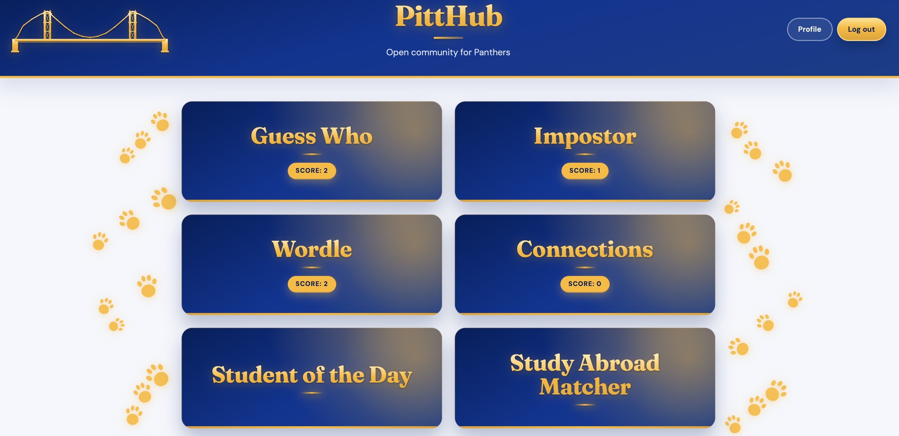

Projects
ASL Translation Aid
Real-time ASL gesture → text prototype using hand landmarks and classification for accessibility.
Hackathon • 2025
ASL Translation Aid
Real-time ASL gesture → text prototype using hand landmarks and classification for accessibility.

Built a prototype pipeline that translates American Sign Language gestures into text, focusing on clean data structures and real-time inference.
Highlights
- Inference loop: designed a frame → landmarks → model → output flow
- Structure: created clear data objects for gestures and predicted tokens
- ML: experimented with RandomForest and TensorFlow-based approaches
- Realtime: used MediaPipe for hand tracking on webcam frames
Tech
What I’d do next
- Improve temporal smoothing to reduce irregular variations in predictions
- Turn it into a simple web demo and publish a short case study
Budallas Card Game
A real-time multiplayer card game built with Flask and Socket.IO, featuring live state synchronization.
Coursework • 2026
Budallas Card Game
A real-time multiplayer card game built with Flask and Socket.IO, featuring live state synchronization.

Developed a full-stack multiplayer card game hosted on Render. The backend handles turn-based logic, live player updates, and game state management for 2–5 players.
Highlights
- Real-time Sync: utilized Flask-SocketIO to broadcast game state changes instantly to all clients
- Game Logic: implemented complex rules for attacking, defending, and turn rotation in Python
- Idvividual Play: designed server-authoritative logic that only sends a player their own hand data
- Repeatability: created a reconnection system using localStorage so players can rejoin active sessions
Tech
What I’d do next
- Make user experience more fun
- A tutorial for new players
- Add bots with a variety of difficulty
Pittsburgh Health Analysis
Neighborhood-level ranking using public datasets to analyze recreation access and community indicators.
Coursework • 2024
Pittsburgh Health Analysis
Neighborhood-level ranking using public datasets to analyze recreation access and community indicators.
Aggregated and analyzed public datasets across Pittsburgh neighborhoods and produced visual insights + a composite metric for comparison.
Highlights
- Data cleaning: merged multiple sources across 90 neighborhoods
- Geo: used GeoPandas for neighborhood-level joins and spatial context
- Visualization: created 10+ Matplotlib charts to show patterns + tradeoffs
- Composite indicator: built a simple scoring system to compare neighborhood well-being
Tech
What I’d do next
- Document data sources and assumptions more formally
- Turn the score into an interactive map
- Add sensitivity analysis for weighting choices
Personal Portfolio Website
A clean, accessible, and responsive portfolio site built from scratch to showcase my work.
Coursework • 2026
Personal Portfolio Website
A clean, accessible, and responsive portfolio site built from scratch to showcase my work.
Designed and developed a personal website to display my academic and technical projects. I prioritized semantic HTML, modern CSS variables, and accessibility over using heavy frameworks.
Highlights
- No Frameworks: Built with pure HTML/CSS to ensure lightweight performance
- Responsive: Uses CSS Grid and clamp functions for fluid scaling on mobile/desktop
- Accessibility: Semantic tags, high contrast, and keyboard navigation support
- Design: Custom glass-morphism aesthetic with CSS variables for easy theming
Tech
What I’d do next
- Implement a light/dark mode toggle
- Add a blog section for technical writing
- Make the cards more engaging
Crossy Roads Gemini Challenge
A challenge to recreate the classic arcade game Crossy Roads using Gemini 3.
Coursework • 2026
Crossy Roads Gemini Challenge
A challenge to recreate the classic arcade game Crossy Roads using Gemini 3.

Developed a functional clone of Crossy Roads by prompting Gemini 3 to make step by step changes.
Highlights
- OOP Design: Structured game objects (player, obstacles, terrain) using inheritance and polymorphism
- Game Loop: Implemented a real-time update and render cycle for smooth gameplay
- Collision Detection: Created bounding-box logic to handle interactions between the player and traffic
- State Management: Managed game states (menu, playing, game over) and score tracking
Tech
What I’d do next
- Add sound affects and animations to the game
- Improve the looks of objects and the background
- Add more fun and exciting features to the game
Basketball Database
A small CLI app that tracks basketball stats (points, assists, rebounds, minutes) in a SQLite database.
Coursework • 2026
Basketball Database
A small CLI app that tracks basketball stats (points, assists, rebounds, minutes) in a SQLite database.
Developed a database to hold basketball stats and an interface to interact with it using Cursor.
Operations
- Create: Inserts a new stat row
- Read: Shows stats (all, sorted, or filtered)
- Update: Changes one stat for a row
- Delete: Removes a row by ID
Tech
What I’d do next
- Create more tables for the stats, like for games, seasons, player stats, team stats
- Use it in an actual project involving basketball
- Make the UI more pleasant and easier to interact with
Python Quiz App
A CLI quiz app built to explore AI agentic workflows (plan-delegate-review) using Cursor.
Coursework • 2026
Python Quiz App
A CLI quiz app built to explore AI agentic workflows (plan-delegate-review) using Cursor.

Developed a command-line Python quiz application to explore multi-agent AI workflows. I wrote a detailed specification, delegated the initial build to GitHub Copilot's Agent Mode, and utilized an independent AI for code review.
Highlights
- Agentic Build: Directed an AI agent to implement the app based strictly on a comprehensive SPEC.md file.
- Data & Auth: Engineered a local login system, JSON file I/O for question banks, and secure, non-human-readable score tracking.
- Adaptive Logic: Implemented a feedback loop that adjusts future question selection based on user ratings.
- AI Code Review: Prompted a fresh AI agent session to audit the raw codebase for bugs, unhandled errors, and security flaws.
Tech
What I’d do next
- Experiment with parallel AI reviewers (e.g., separate agents for security and code style).
- Automate the generation of new study subjects into the JSON format.
- Refine the terminal UI with richer text formatting and colors.
Yugoslavia Tourist Checklist
A local-first Expo / React Native app to track recommended sights across the former Yugoslav republics, with country filters and derived travel stats.
Coursework • 2026
Yugoslavia Tourist Checklist
A local-first Expo / React Native app to track recommended sights across the former Yugoslav republics, with country filters and derived travel stats.

I wrote a detailed SPEC.md (screens, filters, full location dataset, and stat rules), then directed an AI coding agent to implement the app in Expo with file-based routing. Progress is stored only on-device via Async Storage; a separate review pass checked the result against the spec and drove follow-up fixes and UX polish.
Highlights
- Spec-driven build: Two-tab flow—My Accomplishments (alphabetical checklist with per-country filters) and My Stats (completion %, summed elevation, and “regions fully covered” for the active filter).
- Persistent state: Visited locations saved locally with a versioned JSON shape, ID sanitization, and user-visible handling when storage read/write fails.
- Derived metrics: Stats recompute from filtered subsets (e.g. elevation totals and region completion when every sight in a region is checked).
- Agent workflow: Implement from spec → structured code review (
REVIEW.md) → targeted fixes and visual improvements (navigation shell, clearer hierarchy, haptics-friendly interaction).
Tech
What I’d do next
- Add automated tests for filter/stats edge cases and persistence migrations.
- Optional cloud backup or export so progress survives device changes.
- Accessibility pass (labels, contrast, larger touch targets) and optional localization.
PittHub
An open community hub for Pitt students — a collection of Pitt-themed daily games and tools powered by real student profiles.
Coursework • 2026
PittHub
An open community hub for Pitt students — a collection of Pitt-themed daily games and tools powered by real student profiles.

Built a static site where Panthers sign up, fill out a profile, and can opt in to be the daily answer for Pitt-flavored games. Every day at local midnight, different opted-in students are automatically picked for Guess Who, Wordle, and Student of the Day. Accounts, profiles, and per-user game stats are stored in Supabase so streaks follow you across devices.
Highlights
- Six games & tools: Guess Who, Wordle, Student of the Day, Impostor, Connections, and a Study Abroad Matcher
- Daily rotation: a scheduled pick per game so every day surfaces a new mystery Panther
- Auth & profiles: Supabase handles sign-up, login, opt-in, and per-user stats (wins, streaks, daily status)
- Study Abroad Matcher: swipeable deck that re-ranks 35 Pitt programs by Euclidean distance on a normalized feature vector
Tech
What I’d do next
- Add more community-driven games and tools
- Improve mobile UX and add push/email daily reminders
- Expand beyond Pitt to other universities
Experience
Krka Pharmaceuticals Intern
Supported enterprise data workflows and learned how data moves across systems.
Novo Mesto • 2025
Krka Pharmaceuticals Intern
Supported enterprise data workflows and learned how data moves across systems.
Worked in a pharmaceutical environment with real business processes, internal datasets, and cross-team communication.
What I did
- SQL: performed joins on internal company datasets to support reporting needs
- SAP workflows: observed and assisted with structured business processes
- APIs: reviewed and documented integrations using M-Files
- Collaboration: worked with IT + business teams on how systems connect
Skills used
Key takeaway
I got my first real view of how “messy real life” data becomes structured business decisions.
Research Data Engineer
Developing data pipelines and scoring logic to rate corporate Digital & AI Maturity.
Pittsburgh • 2026
Research Data Engineer
Developing data pipelines and scoring logic to rate corporate Digital & AI Maturity.
Building the "Master Data Collector," a system designed to rate companies based on financial data, social media presence, and digital maturity. My focus is on data integrity and algorithmic scoring.
What I'm doing
- Algorithm Design: writing core logic to score brands on "Digital Pillars" (e.g., AI, Partnerships)
- API Integration: querying the NewsAPI to automatically fetch and classify relevant corporate news
- Quality Control: auditing complex company merges and validating master datasets
- Data Cleaning: identifying and fixing critical merge errors (e.g., entity resolution mismatches)
Skills used
Key takeaway
Building a reliable scoring system requires balancing automated logic with rigorous human-in-the-loop verification.
Teaching Assistant
Helped students build strong foundations in Java, debugging, and problem-solving.
Pittsburgh • 2025/26
Teaching Assistant
Helped students build strong foundations in Java, debugging, and problem-solving.
Supported an introductory Java course with labs, office hours, and structured help for debugging and core concepts.
What I did
- Led: weekly lab sessions for ~20 students
- Debugging: helped students systematically find and fix issues
- Teaching: explained fundamentals clearly (loops, arrays, methods, OOP basics)
- Support: held office hours and guided students through assignments
Skills used
Key takeaway
Teaching made me faster at diagnosing code and explaining technical ideas in simple steps.
Peer Tutor
Tutored students in discrete math reasoning and Java programming fundamentals.
Pittsburgh • 2026
Peer Tutor
Tutored students in discrete math reasoning and Java programming fundamentals.
Delivered 1:1 and small-group tutoring focused on building confidence, reasoning skills, and repeatable problem-solving habits.
What I did
- Discrete Structures: logic, proofs, sets, relations, induction
- Intro Programming: Java fundamentals, debugging strategies, code reading
- Coaching: helped students develop step-by-step approaches to problems
Skills used
Key takeaway
The best explanations are structured like algorithms: clear inputs, steps, and checks.
About
I’m a Data Science and Computer Science student at the University of Pittsburgh with a strong foundation in mathematics and logical problem-solving. I’m drawn to problems where structure, efficiency, and clear reasoning matter, and where the goal is not just a solution, but the best one.
I like projects that combine data, algorithms, and real-world impact (healthcare, transportation/logistics, and sports analytics). I’m building experience across Python, Java, SQL, and ML, and I enjoy turning messy, unstructured inputs into tools people can actually use.
Outside academics, I play water polo and basketball. Those teams taught me discipline, iteration, and how to perform under pressure, which translates surprisingly well to engineering.
Contact
You can reach me here: